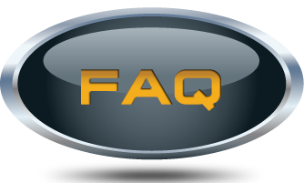

Véhicules:

Quel type de véhicule doit-on posséder ?
Le minimum requis est un véhicule d’une capacité de 9500 lb. Le choix du véhicule devrait en tout temps correspondre aux besoins du client en matière d’utilisation et d’accessoires. Évidemment, il doit respecter les normes de sécurité exigées par la loi. Petit conseil : si cela est possible, toujours consulter le manufacturier avant d’acheter un nouveau véhicule.
Doit-on équiper le véhicule de stabilisateurs ?
Cela dépend du type d’échelle choisie et des normes de sécurité requises par la loi. Les modèles RH38, RH41 et RH44 (isolées ou non isolées) ne requièrent pas de stabilisateurs dans des conditions normales d’utilisation. Nos normes d’installation sont rigoureuses et un test de stabilité est requis pour chaque installation. Ce dernier détermine si des stabilisateurs sont nécessaires.
Quelle est la hauteur maximale que le véhicule doit peut avoir ?
Les lois à cet effet peuvent varier selon les régions géographiques, il est de votre responsabilité de vous assurer de la conformité à celles-ci. Néanmoins, généralement en Amérique du Nord, la hauteur totale maximale est de 13 pi 6 po (incluant la nacelle ou tous autres accessoires). Nous vous suggérons de garder un espace sous cette limite (exemple : laisser 2 po pour prévoir les conditions hivernales).
Échelles télescopiques et accessoires :
Quelle est la capacité au panier ?
La capacité au panier varie selon le véhicule porteur et est établie lors du test de stabilité. Nos engins élévateurs à nacelle peuvent supporter 350 lb au panier mais, selon les conditions d’installation, la charge applicable au panier varie.
Votre nacelle est-elle très lourde ?
La nacelle RH parait massive, pourtant, elle est légère. Le design de cette nacelle vous permet d’aller plus haut tout en utilisant un plus petit véhicule. De plus, elle peut lever des charges.
Une nacelle est bonne pour combien d’années ?
La nacelle RH a été conçue pour durer plus de 30 ans avec un minimum de maintenance. Ce qui veut dire que, lorsque la vie de votre véhicule sera terminée, vous pourrez prendre votre nacelle et ses accessoires afin de les transférer sur un nouveau véhicule. Cependant, il est à conseiller de faire un reconditionnement sur la nacelle pour qu’elle puisse passer une autre vie de camion sans problème. Cela se fait à un coût modique.
Peut-il y avoir des interférences lorsque 2 échelles télescopiques diélectriques (isolées) équipées de radio contrôle travaillent côte à côte ?
Non, cette situation ne peut pas se produire puisque chaque contrôle émet plus d’une cinquantaine de signaux aléatoires par seconde. Ainsi, 5 nacelles pourraient travailler côte à côte et chaque contrôle reconnaîtrait uniquement la nacelle qu’il dirige.
Une deuxième batterie est-elle nécessaire pour faire fonctionner l’échelle ?
La deuxième batterie est optionnelle et dépendra des autres accessoires du véhicule et de votre fréquence d’utilisation. Néanmoins, elle est recommandée afin d’isoler votre nacelle de votre véhicule.
À quelle fréquence doit-on effectuer un test diélectrique afin de vérifier l’isolation de notre nacelle ?
La réponse se trouve dans vos règlements locaux. Cependant, dans la juridiction canadienne (CSA C225-00), le test d’isolation doit être effectué une fois tous les trois ans. Noter que certains donneurs d’ordres demandent une vérification plus systématique.
Quelle est la rigidité diélectrique de vos échelles isolées ?
Selon la CSA C225-00, nos échelles diélectriques (isolées) entrent dans la catégorie « C ». Donc, par défaut, nous sommes limités à une isolation de 46 kV. Nous effectuons nos tests de qualification diélectrique à 100kV AC durant trois minutes afin de respecter ce critère.
Est-il possible de percer le panier ?
Selon votre équipement, la réponse à cette question diffère. Dans le cas d’une nacelle diélectrique (isolée), en aucun cas, vous ne devez percer votre panier, car cela annule automatiquement l’isolation. Si vous avez une échelle télescopique RH non isolée, il est possible de percer le panier. Veuillez par contre demander les indications au manufacturier afin de ne pas endommager les propriétés structurelles de la nacelle.
Quelle catégorie d’isolation est offerte par les équipements aériens RH ?
Catégorie C.
Quelle est la différence entre la catégorie A, B et C ?
Les unités de catégorie C ont une couverture d’une tension électrique maximale de 46 kV et moindre. Les parties isolées de l’unité fournissent seulement la protection secondaire à l’opérateur dans la nacelle, c'est-à-dire que l’isolation s’arrête/commence là où la fibre de verre termine ou commence.
Les équipements RH sont munis d’une section en fibre de verre de quatre pieds et sont isolés en toute position. Celle-ci se trouve entre le panier (nacelle) et la section d’aluminium. Uniquement l’équipage au sol sera protégé. La couverture principale (primaire) est destinée pour être fournie par d’autres moyens tels que : des gants en caoutchouc, vêtements appropriés, « hot stick », etc.
La catégorie A et B sont conçus pour fournir la protection principale (primaire) à l’opérateur dans la nacelle en plus de l’équipage qui l’entoure. Ils sont munis d’un moyen pour contrôler la fuite électrique potentielle par le biais d’un dispositif aérien d’isolation (système d’électrode périodique). Les unités de catégorie C n’exigent aucunement ce système ce qui fait toute la différence.
Qui pourrait se servir d’équipements aériens isolés ?
Les échelles isolées des Équipements Aériens RH répondront aux besoins des professionnels de plusieurs métiers, tels que :
-
les municipalités pour le changement et l’entretien des routes et les parcs ;
-
l’émondage ;
-
les télécommunications ;
-
l’entretien et l’installation d’enseigne ;
-
l’électricité ;
-
les parcs d’attractions ;
-
les stationnements ;
-
des arénas et des stades ;
-
... et plusieurs autres !
Les présentes informations peuvent être sujettes à modification selon les régions, les modifications de normes, des lois et autres. Robert Hydraulique inc. n’est pas responsable d’une erreur pouvant s’y glisser (pour diverses raisons comme le temps), et vous demande de toujours contre-vérifier les informations ci-dessus.